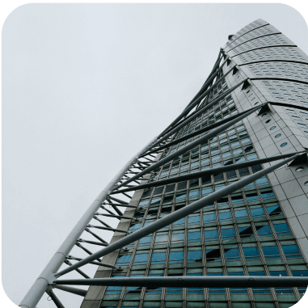

Hay algo que le digo a todos mis pacientes antes de operar: la cirugía la hago yo, la recuperación la hacemos juntos. No es una frase de cortesía. Es la descripción exacta de cómo funciona el proceso. Los cuidados postoperatorios y el seguimiento que hacemos juntos tienen tanta influencia en el resultado final como la técnica quirúrgica misma.
En este artículo te cuento qué esperar después de una cirugía estética, cómo acompaño ese proceso y por qué el protocolo de seguimiento no es un trámite adicional sino parte del tratamiento.
Después de cualquier cirugía estética hay una respuesta inflamatoria normal. Edema, moretones, sensación de tensión. Eso no es una complicación, es el proceso natural de los tejidos respondiendo a la intervención. Lo importante es saber qué entra dentro de ese rango normal y qué señales merecen atención inmediata.
En los primeros días recomiendo reposo relativo, evitar esfuerzos físicos y seguir al pie de la letra las indicaciones de cuidado específicas para cada tipo de procedimiento. En rinoplastía, por ejemplo, hay restricciones para actividades que impliquen esfuerzo o exposición solar. En procedimientos corporales las indicaciones varían. Cada caso tiene su protocolo y te lo explico en detalle antes del alta.
"Lo más importante en el postoperatorio no es lo que hay que hacer si pasa algo. Es lo que hay que hacer para que no pase."
Uno de los principios que guían mi práctica es que el protocolo de complicaciones tiene tres partes: prevención, seguimiento y respuesta. La más importante es la primera. Una evaluación preoperatoria completa, exámenes específicos según cada caso y una planificación cuidadosa reducen significativamente los riesgos. Pero si durante el seguimiento aparece algo que requiere atención, hay que actuar rápido.
Tengo un caso que ejemplifica esto bien. Una paciente llegó a operarse y durante la cirugía descubrimos que tenía rellenos en la nariz que no nos había informado porque, según ella, no recordaba habérselos puesto hace más de veinte años. Activamos inmediatamente nuestro protocolo: terminamos la cirugía, explicamos la situación, indicamos cámara hiperbárica e hicimos seguimiento diario. La paciente evolucionó favorablemente. Pero ese caso muestra con claridad por qué el seguimiento estrecho y la comunicación honesta entre paciente y cirujano son indispensables.
Esta es una de las preguntas más frecuentes y la respuesta depende del tipo de procedimiento y de cada paciente. En líneas generales, en rinoplastía la mayoría puede retomar actividades cotidianas entre la primera y segunda semana. Actividades físicas más intensas requieren más tiempo. En procedimientos corporales los tiempos varían según la extensión del trabajo realizado.
Para pacientes que vienen de fuera del país, mi recomendación es quedarse como mínimo catorce días desde el día de la cirugía antes de viajar. Es el seguimiento mínimo necesario para poder viajar sin riesgo de complicaciones. Si te operas un lunes, deberías tener tu última evaluación antes de viajar el lunes de la semana siguiente.
Algo que muchos pacientes no anticipan es que el resultado de una cirugía estética no es estático. Los tejidos maduran, la inflamación cede de forma gradual y los cambios continúan definiéndose durante meses. En rinoplastía el resultado final puede apreciarse con claridad recién entre los seis y doce meses. En procedimientos corporales los tiempos son distintos pero el principio es el mismo.
Los controles postoperatorios no son solo para verificar que no haya problemas. Son para acompañar esa evolución, confirmar que el proceso va en la dirección correcta y ajustar cualquier indicación según cómo responde cada paciente. Ese acompañamiento es parte de lo que ofrezco y es parte de lo que hace que los resultados sean predecibles.
Si tienes dudas sobre algún procedimiento específico o quieres saber qué esperar en tu caso, el mejor primer paso es una evaluación. Ahí puedo darte información concreta y personalizada sobre tu situación.





Copyright © 2026. Todos los derechos reservados.